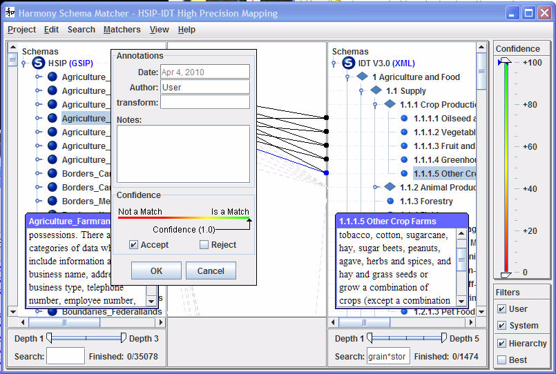
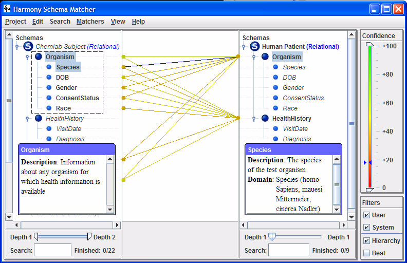

Schema Mappings
Introduction
Harmony manages the relationships between two schemas as a mapping.
A mapping is the set of all links between elements in a given ordered schema-pair (source, target). A given schema-pair has two associated mappings: one in "forward order" and one in "reverse order". These two mappings may be different.
A link (or "match link") is a directed relationship from an element in a source schema to an element in a target schema.
A given element in a source schema may be linked to more than one element in a target schema; each link has an associated degree of confidence that the relationship between the two elements is "semantically valid".
The following sections discuss the management of mappings, the visualization and inspection of match links, the manual creation (and review) of match links, and the automated creation of match links.
Inspecting Mappings
Once a project containing a mapping has been selected and opened, the main Harmony window will show three principal vertical panes. The left pane visualizes the source schema, the right pane visualizes the target schema, and the middle pane visualizes the set of links in that mapping. The section on Schemas, described how to manipulate the presentation of schemas in the left and right panes. This section describes how to manipulate the presentation of mappings in the middle pane.
Individual links in the current mapping appear as individual lines between nodes (rows labeled by the name of an element and adorned with a node-icon) in the linked schemas.
- Links between schema elements that are both expanded ("visible" although perhaps vertically-scrolled off of the current schema display) appear as solid lines that are colored in correspondence with their degree of confidence. If the link has a degree of confidence of 1.0 then it is black.
- Links to descendants of a non-expanded schema element will appear as dotted gray lines connected to that non-expanded schema element. Expanding that portion of the schema graph until the element itself has been expanded (for both the source and target schemas) will result in the link changing to a colored, solid line.
When a link is presented as a solid line then it may be selected. Metadata regarding that link may be accessed by right-clicking on that line to bring up the Annotations dialog. The line turns blue, indicating that it has been selected, and the element description dialogs (see Element Descriptions) for the two linked elements are automatically displayed, as follows: 
A confidence score is attached to each link. If the link was created by the user, the confidence score is always set to 1. If the link was created by a software matcher, the confidence score may vary between 0.0 and 1.0, representing the degree of confidence of the matcher, with 1.0 representing 100% confidence. The color of the link reflects the confidence score.
In the following example, match links have confidence scores ranging between 0.15 and 0.50; the selected link (in blue) has a confidence score of 0.19 – this is indicated in the Confidence pane by the pair of facing blue triangles. 
The Confidence pane at the right of the Harmony window controls the visibility of links. It contains a color-shaded (red to green) bar and two sliders. The sliders control a pair of confidence thresholds which, by default, are set to ensure that all links are visible – the low confidence threshold is set to 0.0 and the high confidence threshold is set to 1.0. To view only links within a specified range of confidence one or both confidence thresholds (low-end and high-end) may be adjusted.
The Filters pane at the bottom right of the Harmony window allows links to be filtered by other considerations.
- The User filter enables only links generated by the user to be visible.
- The System filter enables only links generated by the schema matchers to be visible.
- The Hierarchy filter filters links to elements which appear in multiple parts of the schema hierarchy. Imagine a schema which has the element "Telephone" appear as a child of the elements "Home" and "Business". A matched schema containing "Company->Telephone" would have the element Telephone match both locations in the other schemas. The hierarchical filter works by examining parent elements to find the most relevant linkage while hiding all other linkages.
- The Best filter enables only the link with the highest confidence score that is connected to each element to be visible.
In the Annotations dialog, the Date indicates the date on which the link was created or last edited; it is system-determined.
By default, in the Annotations dialog Harmony specifies the Transform and Notes text-fields to hold annotations. In this example they are both empty, but they both may be edited along with the Author field. In the case that the link was created by a software matcher then the Transform field will be automatically populated.
Either Cancel, or if no change was made then OK, may be selected, thus closing the Annotations dialog. A different link may then be selected and its annotations inspected.